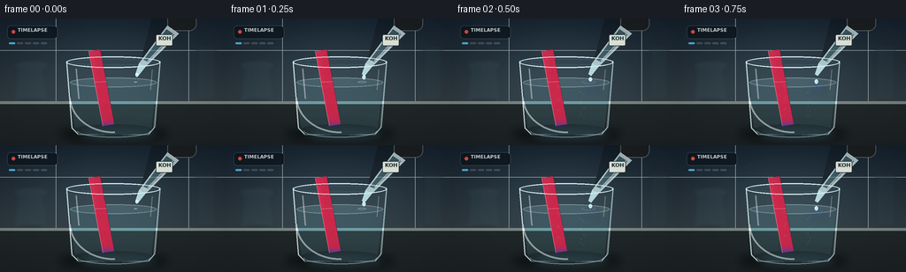
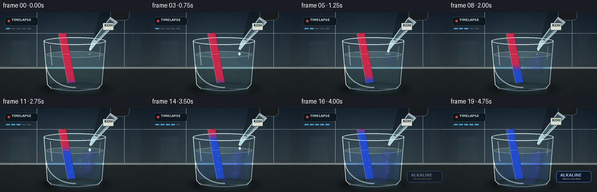

CODING AGENTS AS PIXEL WORLD MODELS
traex/GPT-5.6-Sol · material_0033
点击播放 · 原生 RGB 像素
逐轮保存的候选
回放视频、检查图与代码变化。
每份候选均可单独播放。实际图片检查记录在下方工具轨迹中。
候选 01播放与检查图
点击播放 · 原生 RGB 像素


展开代码变化
--- 上一保存版本
+++ 本次保存版本
@@ -0,0 +1,261 @@
+from pathlib import Path
+import math
+import numpy as np
+from PIL import Image, ImageDraw, ImageFont, ImageFilter
+import artifact_io
+
+W,H,N = 256,144,20
+S=3
+FONT='/usr/share/fonts/truetype/dejavu/DejaVuSans.ttf'
+FONT_B='/usr/share/fonts/truetype/dejavu/DejaVuSans-Bold.ttf'
+
+def sc(v): return int(round(v*S))
+def pts(seq): return [(sc(x),sc(y)) for x,y in seq]
+def font(sz,bold=False): return ImageFont.truetype(FONT_B if bold else FONT, sc(sz))
+def smoothstep(a,b,x):
+ x=max(0,min(1,(x-a)/(b-a)))
+ return x*x*(3-2*x)
+
+def alpha_over(base, layer):
+ return Image.alpha_composite(base.convert('RGBA'),layer.convert('RGBA'))
+
+def clipped_layer(layer, mask):
+ a=np.array(layer.getchannel('A'),dtype=np.uint16)
+ m=np.array(mask,dtype=np.uint16)
+ layer.putalpha(Image.fromarray(((a*m)//255).astype(np.uint8),'L'))
+ return layer
+
+def make_background(t):
+ h,w=H*S,W*S
+ yy=np.linspace(0,1,h)[:,None,None]
+ xx=np.linspace(0,1,w)[None,:,None]
+ top=np.array([19,31,43.],float); bot=np.array([58,68,71.],float)
+ arr=top[None,None,:]*(1-yy)+bot[None,None,:]*yy
+ arr=np.broadcast_to(arr,(h,w,3)).copy()
+ # subtle cool pool of light at center
+ glow=np.exp(-(((xx-.47)/.48)**2 + ((yy-.40)/.55)**2)*2.0)
+ arr += glow*np.array([12,16,17.])[None,None,:]
+ # deterministic film texture
+ rng=np.random.default_rng(811)
+ arr += rng.normal(0,1.3,(h,w,1))
+ arr=np.clip(arr,0,255).astype(np.uint8)
+ im=Image.fromarray(arr,'RGB').convert('RGBA')
+ d=ImageDraw.Draw(im,'RGBA')
+ # out-of-focus wall tile seams
+ d.line((0,sc(36),sc(256),sc(36)),fill=(145,159,164,20),width=sc(.6))
+ d.line((sc(63),0,sc(63),sc(95)),fill=(150,165,170,13),width=sc(.6))
+ d.line((sc(213),0,sc(213),sc(95)),fill=(150,165,170,13),width=sc(.6))
+ # blurred background lab vessels
+ bg=Image.new('RGBA',im.size,(0,0,0,0)); b=ImageDraw.Draw(bg,'RGBA')
+ b.ellipse((sc(15),sc(48),sc(55),sc(58)),fill=(111,151,160,18),outline=(190,220,222,45),width=sc(1))
+ b.polygon(pts([(20,53),(49,53),(54,94),(15,94)]),fill=(80,126,137,18),outline=(190,216,218,35))
+ b.ellipse((sc(15),sc(88),sc(54),sc(98)),fill=(15,29,33,40),outline=(162,195,202,28),width=sc(1))
+ b.rectangle((sc(224),sc(32),sc(242),sc(91)),fill=(62,86,93,20),outline=(182,207,210,32),width=sc(1))
+ bg=bg.filter(ImageFilter.GaussianBlur(sc(2.3)))
+ im=alpha_over(im,bg)
+ # bench and rear lip
+ d=ImageDraw.Draw(im,'RGBA')
+ d.rectangle((0,sc(94),sc(256),sc(144)),fill=(32,39,41,255))
+ d.rectangle((0,sc(94),sc(256),sc(97)),fill=(117,128,126,45))
+ # bench directional gradient
+ ov=Image.new('RGBA',im.size,(0,0,0,0)); od=ImageDraw.Draw(ov,'RGBA')
+ for y in range(sc(97),sc(144)):
+ f=(y-sc(97))/sc(47)
+ od.line((0,y,sc(256),y),fill=(6,9,10,int(8+45*f)),width=1)
+ im=alpha_over(im,ov)
+ return im
+
+def glass_masks():
+ water=Image.new('L',(W*S,H*S),0); d=ImageDraw.Draw(water)
+ d.polygon(pts([(78,71),(178,71),(172,124),(84,124)]),fill=255)
+ d.ellipse((sc(84),sc(116),sc(172),sc(132)),fill=255)
+ return water
+
+WATER_MASK=glass_masks()
+
+# fixed speckle field for paper texture
+rng=np.random.default_rng(2026)
+PAPER_NOISE=rng.normal(0,4.5,(H*S,W*S))
+
+def render(i):
+ t=i/(N-1)
+ im=make_background(t)
+ # cast shadow/reflection under beaker
+ sh=Image.new('RGBA',im.size,(0,0,0,0)); sd=ImageDraw.Draw(sh,'RGBA')
+ sd.ellipse((sc(66),sc(120),sc(190),sc(142)),fill=(0,0,0,115))
+ sd.ellipse((sc(92),sc(125),sc(174),sc(137)),fill=(62,124,150,25+int(20*t)))
+ sh=sh.filter(ImageFilter.GaussianBlur(sc(5)))
+ im=alpha_over(im,sh)
+
+ # glass rear wall and clear liquid body
+ g=Image.new('RGBA',im.size,(0,0,0,0)); gd=ImageDraw.Draw(g,'RGBA')
+ # back glass faint body
+ gd.polygon(pts([(75,48),(181,48),(174,125),(168,132),(88,132),(81,125)]),
+ fill=(141,195,207,13),outline=(204,233,237,105),width=sc(1.1))
+ gd.ellipse((sc(75),sc(43),sc(181),sc(56)),fill=(126,177,190,18),outline=(221,243,246,175),width=sc(1.4))
+ gd.ellipse((sc(80),sc(46),sc(176),sc(53)),outline=(73,112,122,95),width=sc(1))
+ # liquid basic fill
+ prog=smoothstep(.09,.9,t)
+ liquid_col=(102-int(26*prog),164-int(25*prog),178+int(32*prog),50+int(15*prog))
+ gd.polygon(pts([(79,72),(177,72),(171,124),(166,128),(90,128),(84,124)]),fill=liquid_col)
+ gd.ellipse((sc(79),sc(67),sc(177),sc(78)),fill=(145,204,212,52),outline=(205,237,240,105),width=sc(1))
+ gd.ellipse((sc(84),sc(120),sc(172),sc(132)),fill=(85,139,155,34))
+ im=alpha_over(im,g)
+
+ # spreading alkaline blue/purple plume, clipped to water
+ plume=Image.new('RGBA',im.size,(0,0,0,0))
+ if t>.08:
+ pd=ImageDraw.Draw(plume,'RGBA')
+ p=smoothstep(.08,.94,t)
+ # downward curling strands from KOH impact point
+ for k in range(12):
+ phase=k*.78
+ x0=154 + 6*math.sin(phase+4.2*t)
+ y0=71
+ length=(15+55*p)*(0.70+0.025*k)
+ width=1.1+2.5*p*(1+(k%3)*.2)
+ path=[]
+ for q in np.linspace(0,1,22):
+ y=y0+q*length
+ x=x0 + math.sin(q*5.5+phase+6*t)*(2+10*q*p) - 27*q*q*p + k*.35
+ path.append((sc(x),sc(y)))
+ col=(58+int(k*2),60+int(2*k),210+int(min(30,k*2)),int(30+80*p))
+ pd.line(path,fill=col,width=sc(width))
+ # broad diffusion clouds, expanding left/down
+ for k in range(26):
+ a=(k*2.399)
+ rad=(5+48*p)*math.sqrt((k+.8)/27)
+ cx=151-rad*.62 + math.cos(a)*rad*(.22+.3*p)
+ cy=73+rad*.78 + math.sin(a)*rad*.27
+ r=(2.0+7.0*p)*(0.55+(k%5)/8)
+ alpha=int((16+35*p)*(1-k/42))
+ pd.ellipse((sc(cx-r),sc(cy-r*.7),sc(cx+r),sc(cy+r*.7)),fill=(48,69,218,alpha))
+ plume=plume.filter(ImageFilter.GaussianBlur(sc(2.2+2.5*p)))
+ plume=clipped_layer(plume,WATER_MASK)
+ im=alpha_over(im,plume)
+
+ # litmus paper: red -> purple transition edge -> blue, rising upward
+ paper_mask=Image.new('L',im.size,0); md=ImageDraw.Draw(paper_mask)
+ poly=pts([(100,37),(113,35),(129,120),(116,122)])
+ md.polygon(poly,fill=255)
+ mask=np.array(paper_mask)/255.0
+ yy=np.arange(H*S)[:,None]/S
+ # transition begins at immersed bottom, wicks to the top by the end
+ pp=smoothstep(.12,.96,t)
+ threshold=121-88*pp
+ blue_fraction=1/(1+np.exp(-(yy-threshold)/2.1))
+ # even final frame turns full strip blue
+ if t>.94: blue_fraction=np.maximum(blue_fraction,smoothstep(.94,1,t))
+ red=np.array([198,38,72.]); blue=np.array([32,72,201.])
+ rgb=red[None,None,:]*(1-blue_fraction[:,:,None])+blue[None,None,:]*blue_fraction[:,:,None]
+ rgb=np.broadcast_to(rgb,(H*S,W*S,3)).copy()
+ # purple reaction band and paper fiber noise
+ band=np.exp(-((yy-threshold)/3.0)**2)[:,:,None]
+ rgb=rgb*(1-.18*band)+np.array([115,47,173.])[None,None,:]*(.18*band)
+ rgb += PAPER_NOISE[:,:,None]
+ # subtle paper vertical highlight
+ xx=np.arange(W*S)[None,:]/S
+ rgb += (5*np.exp(-((xx-105)/4)**2))[:,:,None]
+ rgba=np.zeros((H*S,W*S,4),dtype=np.uint8)
+ rgba[:,:,:3]=np.clip(rgb,0,255).astype(np.uint8)
+ rgba[:,:,3]=(mask*245).astype(np.uint8)
+ paper=Image.fromarray(rgba,'RGBA')
+ im=alpha_over(im,paper)
+ # litmus paper edges and immersed refraction offset
+ pe=Image.new('RGBA',im.size,(0,0,0,0)); ped=ImageDraw.Draw(pe,'RGBA')
+ ped.line(pts([(100,37),(116,122)]),fill=(255,222,221,90),width=sc(.6))
+ ped.line(pts([(113,35),(129,120)]),fill=(28,24,53,85),width=sc(.7))
+ # wet boundary shine at waterline
+ ped.line(pts([(106.5,72),(120,71.5)]),fill=(221,246,249,130),width=sc(.8))
+ im=alpha_over(im,pe)
+
+ # bubbles/ripples from drops
+ fx=Image.new('RGBA',im.size,(0,0,0,0)); fd=ImageDraw.Draw(fx,'RGBA')
+ if t>.10:
+ p=smoothstep(.1,1,t)
+ for k in range(10):
+ by=114-((i*1.7+k*9.1)%39)
+ bx=137+18*math.sin(k*2.1+i*.19)
+ rr=0.55+(k%3)*.35
+ fd.ellipse((sc(bx-rr),sc(by-rr),sc(bx+rr),sc(by+rr)),outline=(214,245,252,int(35+55*p)),width=sc(.45))
+ # expanding impact rings on liquid surface
+ impact=(i%4)/3
+ if i<15:
+ rr=2+9*impact
+ fd.ellipse((sc(153-rr),sc(72-rr*.22),sc(153+rr),sc(72+rr*.22)),outline=(222,250,252,int(130*(1-impact))),width=sc(.7))
+ im=alpha_over(im,clipped_layer(fx,WATER_MASK))
+
+ # front glass contours and crisp highlights
+ front=Image.new('RGBA',im.size,(0,0,0,0)); f=ImageDraw.Draw(front,'RGBA')
+ f.line(pts([(75,49),(81,124),(88,131)]),fill=(221,245,247,180),width=sc(1.2))
+ f.line(pts([(181,49),(175,123),(168,131)]),fill=(203,236,241,145),width=sc(1.1))
+ f.arc((sc(87),sc(120),sc(170),sc(135)),0,180,fill=(205,237,242,120),width=sc(1))
+ f.ellipse((sc(75),sc(43),sc(181),sc(56)),outline=(231,250,251,180),width=sc(1))
+ f.arc((sc(78),sc(46),sc(178),sc(130)),88,178,fill=(245,255,255,125),width=sc(2))
+ f.line(pts([(86,57),(89,91)]),fill=(255,255,255,95),width=sc(1.7))
+ f.line(pts([(172,58),(170,81)]),fill=(255,255,255,70),width=sc(.9))
+ im=alpha_over(im,front)
+
+ # dropper enters from upper-right, slight time-lapse hand movement
+ dy=-2*smoothstep(.78,1,t)
+ dr=Image.new('RGBA',im.size,(0,0,0,0)); dd=ImageDraw.Draw(dr,'RGBA')
+ # soft shadow
+ dd.polygon(pts([(171,0+dy),(210,0+dy),(173,46+dy),(157,56+dy)]),fill=(0,0,0,55))
+ # black rubber bulb
+ dd.rounded_rectangle((sc(189),sc(-9+dy),sc(222),sc(14+dy)),radius=sc(8),fill=(25,29,31,255),outline=(96,104,105,190),width=sc(1))
+ # glass barrel and alkaline fluid
+ dd.polygon(pts([(189,8+dy),(202,17+dy),(164,55+dy),(157,51+dy)]),fill=(205,231,232,190),outline=(238,253,253,210))
+ dd.polygon(pts([(188,12+dy),(197,18+dy),(167,49+dy),(162,47+dy)]),fill=(103,151,163,95))
+ # tip
+ dd.polygon(pts([(157,51+dy),(164,55+dy),(156,65+dy),(153,63+dy)]),fill=(192,229,233,220),outline=(237,252,253,220))
+ # barrel highlight
+ dd.line(pts([(189,10+dy),(197,16+dy),(167,48+dy)]),fill=(255,255,255,150),width=sc(1))
+ # label wrapped around pipette
+ dd.rounded_rectangle((sc(176),sc(18+dy),sc(195),sc(31+dy)),radius=sc(2),fill=(237,240,227,230),outline=(25,42,46,130),width=sc(.6))
+ dd.text((sc(179),sc(19+dy)),"KOH",font=font(6,True),fill=(19,44,50,255))
+ im=alpha_over(im,dr)
+
+ # animated falling KOH droplet; cycles clearly into the glass
+ if i<16:
+ cyc=(i%4)/4
+ y=64+cyc*10
+ x=154.5+0.7*math.sin(i)
+ r=1.6+0.25*math.sin(cyc*math.pi)
+ drop=Image.new('RGBA',im.size,(0,0,0,0)); q=ImageDraw.Draw(drop,'RGBA')
+ q.ellipse((sc(x-r),sc(y-r*1.35),sc(x+r),sc(y+r*1.35)),fill=(179,232,240,235),outline=(239,255,255,240),width=sc(.5))
+ q.ellipse((sc(x-.6),sc(y-1),sc(x),sc(y-.3)),fill=(255,255,255,210))
+ im=alpha_over(im,drop)
+
+ # UI-like timelapse identifier and progress ticks, minimal and cinematic
+ hud=Image.new('RGBA',im.size,(0,0,0,0)); hd=ImageDraw.Draw(hud,'RGBA')
+ hd.rounded_rectangle((sc(8),sc(8),sc(65),sc(23)),radius=sc(4),fill=(8,16,22,155),outline=(190,218,220,42),width=sc(.5))
+ hd.ellipse((sc(13),sc(13),sc(17),sc(17)),fill=(240,78,68,235))
+ hd.text((sc(20),sc(10)),"TIMELAPSE",font=font(5.2,True),fill=(229,239,239,235))
+ for k in range(5):
+ col=(82,183,232,230) if k <= int(t*5) else (160,179,184,65)
+ hd.rounded_rectangle((sc(10+k*9),sc(27),sc(17+k*9),sc(29)),radius=sc(1),fill=col)
+ # final small reaction badge
+ badge_a=int(220*smoothstep(.75,.93,t))
+ if badge_a:
+ hd.rounded_rectangle((sc(186),sc(108),sc(246),sc(127)),radius=sc(4),fill=(8,18,36,int(badge_a*.80)),outline=(79,139,235,badge_a),width=sc(.7))
+ hd.text((sc(193),sc(111)),"ALKALINE",font=font(6.5,True),fill=(178,206,255,badge_a))
+ hd.text((sc(197),sc(119)),"litmus turns blue",font=font(3.8),fill=(220,231,249,badge_a))
+ im=alpha_over(im,hud)
+
+ # downsample gives clean antialiasing and a photographic softness
+ im=im.convert('RGB').resize((W,H),Image.Resampling.LANCZOS)
+ arr=np.array(im,dtype=np.uint8)
+ # mild vignette and contrast
+ Y,X=np.mgrid[0:H,0:W]
+ vig=1-0.18*np.clip(((X-W/2)/(W*.72))**2+((Y-H/2)/(H*.78))**2,0,1)
+ arr=np.clip((arr.astype(float)-8)*1.055*vig[:,:,None]+8,0,255).astype(np.uint8)
+ return arr
+
+def main():
+ frames=np.stack([render(i) for i in range(N)],axis=0)
+ assert frames.shape==(20,144,256,3) and frames.dtype==np.uint8
+ artifact_io.save(frames,Path(__file__).resolve().parent)
+ print('saved',frames.shape,frames.dtype)
+
+if __name__=='__main__':
+ main()
可观测工具轨迹
实际执行的命令与返回图片。
命令 1exit 0
/bin/bash -lc "cat prompt.txt && printf '\\n--- GENERATION_RULES.md ---\\n' && cat GENERATION_RULES.md"
命令 2exit 0
/bin/bash -lc "cat task_spec.json && printf '\\n--- FILES ---\\n' && find . -maxdepth 2 -type f -printf '%p\\n' | sort"
命令 3exit 0
/bin/bash -lc "command -v ffmpeg; command -v python3; python3 - <<'PY' mods=['cv2','numpy','PIL','imageio','moviepy','cairo'] for m in mods: try: mod=__import__(m); print(m,'OK',getattr(mod,'__version__','')) except Exception as e: print(m,'NO',e) PY"
命令 4exit 0
/bin/bash -lc 'cat artifact_io.py'
命令 5exit 0
/bin/bash -lc 'fc-list | head -20'
命令 6exit 2
/bin/bash -lc "cat > generate.py <<'PY'
from pathlib import Path
import math
import numpy as np
from PIL import Image, ImageDraw, ImageFont, ImageFilter
import artifact_io
W,H,N = 256,144,20
S=3
FONT='/usr/share/fonts/truetype/dejavu/DejaVuSans.ttf'
FONT_B='/usr/share/fonts/truetype/dejavu/DejaVuSans-Bold.ttf'
def sc(v): return int(round(v*S))
def pts(seq): return [(sc(x),sc(y)) for x,y in seq]
def font(sz,bold=False): return ImageFont.truetype(FONT_B if bold else FONT, sc(sz))
def smoothstep(a,b,x):
x=max(0,min(1,(x-a)/(b-a)))
return x*x*(3-2*x)
def alpha_over(base, layer):
return Image.alpha_composite(base.convert('RGBA'),layer.convert('RGBA'))
def clipped_layer(layer, mask):
a=np.array(layer.getchannel('A'),dtype=np.uint16)
m=np.array(mask,dtype=np.uint16)
layer.putalpha(Image.fromarray(((a*m)//255).astype(np.uint8),'L'))
return layer
def make_background(t):
h,w=H*S,W*S
yy=np.linspace(0,1,h)[:,None,None]
xx=np.linspace(0,1,w)[None,:,None]
top=np.array([19,31,43.],float); bot=np.array([58,68,71.],float)
arr=top[None,None,:]*(1-yy)+bot[None,None,:]*yy
arr=np.broadcast_to(arr,(h,w,3)).copy()
# subtle cool pool of light at center
glow=np.exp(-(((xx-.47)/.48)**2 + ((yy-.40)/.55)**2)*2.0)
arr += glow*np.array([12,16,17.])[None,None,:]
# deterministic film texture
rng=np.random.default_rng(811)
arr += rng.normal(0,1.3,(h,w,1))
arr=np.clip(arr,0,255).astype(np.uint8)
im=Image.fromarray(arr,'RGB').convert('RGBA')
d=ImageDraw.Draw(im,'RGBA')
# out-of-focus wall tile seams
d.line((0,sc(36),sc(256),sc(36)),fill=(145,159,164,20),width=sc(.6))
d.line((sc(63),0,sc(63),sc(95)),fill=(150,165,170,13),width=sc(.6))
d.line((sc(213),0,sc(213),sc(95)),fill=(150,165,170,13),width=sc(.6))
# blurred background lab vessels
bg=Image.new('RGBA',im.size,(0,0,0,0)); b=ImageDraw.Draw(bg,'RGBA')
b.ellipse((sc(15),sc(48),sc(55),sc(58)),fill=(111,151,160,18),outline=(190,220,222,45),width=sc(1))
b.polygon(pts([(20,53),(49,53),(54,94),(15,94)]),fill=(80,126,137,18),outline=(190,216,218,35))
b.ellipse((sc(15),sc(88),sc(54),sc(98)),fill=(15,29,33,40),outline=(162,195,202,28),width=sc(1))
b.rectangle((sc(224),sc(32),sc(242),sc(91)),fill=(62,86,93,20),outline=(182,207,210,32),width=sc(1))
bg=bg.filter(ImageFilter.GaussianBlur(sc(2.3)))
im=alpha_over(im,bg)
# bench and rear lip
d=ImageDraw.Draw(im,'RGBA')
d.rectangle((0,sc(94),sc(256),sc(144)),fill=(32,39,41,255))
d.rectangle((0,sc(94),sc(256),sc(97)),fill=(117,128,126,45))
# bench directional gradient
ov=Image.new('RGBA',im.size,(0,0,0,0)); od=ImageDraw.Draw(ov,'RGBA')
for y in range(sc(97),sc(144)):
f=(y-sc(97))/sc(47)
od.line((0,y,sc(256),y),fill=(6,9,10,int(8+45*f)),width=1)
im=alpha_over(im,ov)
return im
def glass_masks():
water=Image.new('L',(W*S,H*S),0); d=ImageDraw.Draw(water)
d.polygon(pts([(78,71),(178,71),(172,124),(84,124)]),fill=255)
d.ellipse((sc(84),sc(116),sc(172),sc(132)),fill=255)
return water
WATER_MASK=glass_masks()
# fixed speckle field for paper texture
rng=np.random.default_rng(2026)
PAPER_NOISE=rng.normal(0,4.5,(H*S,W*S))
def render(i):
t=i/(N-1)
im=make_background(t)
# cast shadow/reflection under beaker
sh=Image.new('RGBA',im.size,(0,0,0,0)); sd=ImageDraw.Draw(sh,'RGBA')
sd.ellipse((sc(66),sc(120),sc(190),sc(142)),fill=(0,0,0,115))
sd.ellipse((sc(92),sc(125),sc(174),sc(137)),fill=(62,124,150,25+int(20*t)))
sh=sh.filter(ImageFilter.GaussianBlur(sc(5)))
im=alpha_over(im,sh)
# glass rear wall and clear liquid body
g=Image.new('RGBA',im.size,(0,0,0,0)); gd=ImageDraw.Draw(g,'RGBA')
# back glass faint body
gd.polygon(pts([(75,48),(181,48),(174,125),(168,132),(88,132),(81,125)]),
fill=(141,195,207,13),outline=(204,233,237,105),width=sc(1.1))
gd.ellipse((sc(75),sc(43),sc(181),sc(56)),fill=(126,177,190,18),outline=(221,243,246,175),width=sc(1.4))
gd.ellipse((sc(80),sc(46),sc(176),sc(53)),outline=(73,112,122,95),width=sc(1))
# liquid basic fill
prog=smoothstep(.09,.9,t)
liquid_col=(102-int(26*prog),164-int(25*prog),178+int(32*prog),50+int(15*prog))
gd.polygon(pts([(79,72),(177,72),(171,124),(166,128),(90,128),(84,124)]),fill=liquid_col)
gd.ellipse((sc(79),sc(67),sc(177),sc(78)),fill=(145,204,212,52),outline=(205,237,240,105),width=sc(1))
gd.ellipse((sc(84),sc(120),sc(172),sc(132)),fill=(85,139,155,34))
im=alpha_over(im,g)
# spreading alkaline blue/purple plume, clipped to water
plume=Image.new('RGBA',im.size,(0,0,0,0))
if t>.08:
pd=ImageDraw.Draw(plume,'RGBA')
p=smoothstep(.08,.94,t)
# downward curling strands from KOH impact point
for k in range(12):
phase=k*.78
x0=154 + 6*math.sin(phase+4.2*t)
y0=71
length=(15+55*p)*(0.70+0.025*k)
width=1.1+2.5*p*(1+(k%3)*.2)
path=[]
for q in np.linspace(0,1,22):
y=y0+q*length
x=x0 + math.sin(q*5.5+phase+6*t)*(2+10*q*p) - 27*q*q*p + k*.35
path.append((sc(x),sc(y)))
col=(58+int(k*2),60+int(2*k),210+int(min(30,k*2)),int(30+80*p))
pd.line(path,fill=col,width=sc(width))
# broad diffusion clouds, expanding left/down
for k in range(26):
a=(k*2.399)
rad=(5+48*p)*math.sqrt((k+.8)/27)
cx=151-rad*.62 + math.cos(a)*rad*(.22+.3*p)
cy=73+rad*.78 + math.sin(a)*rad*.27
r=(2.0+7.0*p)*(0.55+(k%5)/8)
alpha=int((16+35*p)*(1-k/42))
pd.ellipse((sc(cx-r),sc(cy-r*.7),sc(cx+r),sc(cy+r*.7)),fill=(48,69,218,alpha))
plume=plume.filter(ImageFilter.GaussianBlur(sc(2.2+2.5*p)))
plume=clipped_layer(plume,WATER_MASK)
im=alpha_over(im,plume)
# litmus paper: red -> purple transition edge -> blue, rising upward
paper_mask=Image.new('L',im.size,0); md=ImageDraw.Draw(paper_mask)
poly=pts([(100,37),(113,35),(129,120),(116,122)])
md.polygon(poly,fill=255)
mask=np.array(paper_mask)/255.0
yy=np.arange(H*S)[:,None]/S
# transition begins at immersed bottom, wicks to the top by the end
pp=smoothstep(.12,.96,t)
threshold=121-88*pp
blue_fraction=1/(1+np.exp(-(yy-threshold)/2.1))
# even final frame turns full strip blue
if t>.94: blue_fraction=np.maximum(blue_fraction,smoothstep(.94,1,t))
red=np.array([198,38,72.]); blue=np.array([32,72,201.])
rgb=red[None,None,:]*(1-blue_fraction[:,:,None])+blue[None,None,:]*blue_fraction[:,:,None]
# purple reaction band and paper fiber noise
band=np.exp(-((yy-threshold)/3.0)**2)[:,:,None]
rgb=rgb*(1-.18*band)+np.array([115,47,173.])[None,None,:]*(.18*band)
rgb += PAPER_NOISE[:,:,None]
# subtle paper vertical highlight
xx=np.arange(W*S)[None,:]/S
rgb += (5*np.exp(-((xx-105)/4)**2))[:,:,None]
rgba=np.zeros((H*S,W*S,4),dtype=np.uint8)
rgba[:,:,:3]=np.clip(rgb,0,255).astype(np.uint8)
rgba[:,:,3]=(mask*245).astype(np.uint8)
paper=Image.fromarray(rgba,'RGBA')
im=alpha_over(im,paper)
# litmus paper edges and immersed refraction offset
pe=Image.new('RGBA',im.size,(0,0,0,0)); ped=ImageDraw.Draw(pe,'RGBA')
ped.line(pts([(100,37),(116,122)]),fill=(255,222,221,90),width=sc(.6))
ped.line(pts([(113,35),(129,120)]),fill=(28,24,53,85),width=sc(.7))
# wet boundary shine at waterline
ped.line(pts([(106.5,72),(120,71.5)]),fill=(221,246,249,130),width=sc(.8))
im=alpha_over(im,pe)
# bubbles/ripples from drops
fx=Image.new('RGBA',im.size,(0,0,0,0)); fd=ImageDraw.Draw(fx,'RGBA')
if t>.10:
p=smoothstep(.1,1,t)
for k in range(10):
by=114-((i*1.7+k*9.1)%39)
bx=137+18*math.sin(k*2.1+i*.19)
rr=0.55+(k%3)*.35
fd.ellipse((sc(bx-rr),sc(by-rr),sc(bx+rr),sc(by+rr)),outline=(214,245,252,int(35+55*p)),width=sc(.45))
# expanding impact rings on liquid surface
impact=(i%4)/3
if i<15:
rr=2+9*impact
fd.ellipse((sc(153-rr),sc(72-rr*.22),sc(153+rr),sc(72+rr*.22)),outline=(222,250,252,int(130*(1-impact))),width=sc(.7))
im=alpha_over(im,clipped_layer(fx,WATER_MASK))
# front glass contours and crisp highlights
front=Image.new('RGBA',im.size,(0,0,0,0)); f=ImageDraw.Draw(front,'RGBA')
f.line(pts([(75,49),(81,124),(88,131)]),fill=(221,245,247,180),width=sc(1.2))
f.line(pts([(181,49),(175,123),(168,131)]),fill=(203,236,241,145),width=sc(1.1))
f.arc((sc(87),sc(120),sc(170),sc(135)),0,180,fill=(205,237,242,120),width=sc(1))
f.ellipse((sc(75),sc(43),sc(181),sc(56)),outline=(231,250,251,180),width=sc(1))
f.arc((sc(78),sc(46),sc(178),sc(130)),88,178,fill=(245,255,255,125),width=sc(2))
f.line(pts([(86,57),(89,91)]),fill=(255,255,255,95),width=sc(1.7))
f.line(pts([(172,58),(170,81)]),fill=(255,255,255,70),width=sc(.9))
im=alpha_over(im,front)
# dropper enters from upper-right, slight time-lapse hand movement
dy=-2*smoothstep(.78,1,t)
dr=Image.new('RGBA',im.size,(0,0,0,0)); dd=ImageDraw.Draw(dr,'RGBA')
# soft shadow
dd.polygon(pts([(171,0+dy),(210,0+dy),(173,46+dy),(157,56+dy)]),fill=(0,0,0,55))
# black rubber bulb
dd.rounded_rectangle((sc(189),sc(-9+dy),sc(222),sc(14+dy)),radius=sc(8),fill=(25,29,31,255),outline=(96,104,105,190),width=sc(1))
# glass barrel and alkaline fluid
dd.polygon(pts([(189,8+dy),(202,17+dy),(164,55+dy),(157,51+dy)]),fill=(205,231,232,190),outline=(238,253,253,210))
dd.polygon(pts([(188,12+dy),(197,18+dy),(167,49+dy),(162,47+dy)]),fill=(103,151,163,95))
# tip
dd.polygon(pts([(157,51+dy),(164,55+dy),(156,65+dy),(153,63+dy)]),fill=(192,229,233,220),outline=(237,252,253,220))
# barrel highlight
dd.line(pts([(189,10+dy),(197,16+dy),(167,48+dy)]),fill=(255,255,255,150),width=sc(1))
# label wrapped around pipette
dd.rounded_rectangle((sc(176),sc(18+dy),sc(195),sc(31+dy)),radius=sc(2),fill=(237,240,227,230),outline=(25,42,46,130),width=sc(.6))
dd.text((sc(179),sc(19+dy)),\"KOH\",font=font(6,True),fill=(19,44,50,255))
im=alpha_over(im,dr)
# animated falling KOH droplet; cycles clearly into the glass
if i<16:
cyc=(i%4)/4
y=64+cyc*10
x=154.5+0.7*math.sin(i)
r=1.6+0.25*math.sin(cyc*math.pi)
drop=Image.new('RGBA',im.size,(0,0,0,0)); q=ImageDraw.Draw(drop,'RGBA')
q.ellipse((sc(x-r),sc(y-r*1.35),sc(x+r),sc(y+r*1.35)),fill=(179,232,240,235),outline=(239,255,255,240),width=sc(.5))
q.ellipse((sc(x-.6),sc(y-1),sc(x),sc(y-.3)),fill=(255,255,255,210))
im=alpha_over(im,drop)
# UI-like timelapse identifier and progress ticks, minimal and cinematic
hud=Image.new('RGBA',im.size,(0,0,0,0)); hd=ImageDraw.Draw(hud,'RGBA')
hd.rounded_rectangle((sc(8),sc(8),sc(65),sc(23)),radius=sc(4),fill=(8,16,22,155),outline=(190,218,220,42),width=sc(.5))
hd.ellipse((sc(13),sc(13),sc(17),sc(17)),fill=(240,78,68,235))
hd.text((sc(20),sc(10)),\"TIMELAPSE\",font=font(5.2,True),fill=(229,239,239,235))
for k in range(5):
col=(82,183,232,230) if k <= int(t*5) else (160,179,184,65)
hd.rounded_rectangle((sc(10+k*9),sc(27),sc(17+k*9),sc(29)),radius=sc(1),fill=col)
# final small reaction badge
badge_a=int(220*smoothstep(.75,.93,t))
if badge_a:
hd.rounded_rectangle((sc(186),sc(108),sc(246),sc(127)),radius=sc(4),fill=(8,18,36,int(badge_a*.80)),outline=(79,139,235,badge_a),width=sc(.7))
hd.text((sc(193),sc(111)),\"ALKALINE\",font=font(6.5,True),fill=(178,206,255,badge_a))
hd.text((sc(197),sc(119)),\"litmus turns blue\",font=font(3.8),fill=(220,231,249,badge_a))
im=alpha_over(im,hud)
# downsample gives clean antialiasing and a photographic softness
im=im.convert('RGB').resize((W,H),Image.Resampling.LANCZOS)
arr=np.array(im,dtype=np.uint8)
# mild vignette and contrast
Y,X=np.mgrid[0:H,0:W]
vig=1-0.18*np.clip(((X-W/2)/(W*.72))**2+((Y-H/2)/(H*.78))**2,0,1)
arr=np.clip((arr.astype(float)-8)*1.055*vig[:,:,None]+8,0,255).astype(np.uint8)
return arr
def main():
frames=np.stack([render(i) for i in range(N)],axis=0)
assert frames.shape==(20,144,256,3) and frames.dtype==np.uint8
artifact_io.save(frames,Path(__file__).resolve().parent)
print('saved',frames.shape,frames.dtype)
if __name__=='__main__':
main()
PY
python3 generate.py
ls -lh pixels.npz inspection.png transition_check.png index.html frames/00.png frames/19.png"命令 7exit 0
/bin/bash -lc "python3 - <<'PY' p='generate.py' s=open(p).read() s=s.replace(\"rgb=red[None,None,:]*(1-blue_fraction[:,:,None])+blue[None,None,:]*blue_fraction[:,:,None]\", \"rgb=red[None,None,:]*(1-blue_fraction[:,:,None])+blue[None,None,:]*blue_fraction[:,:,None]\\n rgb=np.broadcast_to(rgb,(H*S,W*S,3)).copy()\") open(p,'w').write(s) PY python3 generate.py ls -lh pixels.npz inspection.png transition_check.png index.html frames/00.png frames/19.png"
命令 8exit 0
/bin/bash -lc 'git status --short && du -sh . && find frames -type f | wc -l'
命令 9exit 0
/bin/bash -lc "python3 - <<'PY'
import json, numpy as np
from PIL import Image
s=json.load(open('task_spec.json'))
z=np.load('pixels.npz')['pixels']
print('packed tensor:', z.shape, z.dtype)
fs=[]
for i in range(s['frames']):
a=np.asarray(Image.open(f'frames/{i:02d}.png'))
assert a.shape==(s['height'],s['width'],3) and a.dtype==np.uint8
fs.append(a)
f=np.stack(fs)
print('frames:',f.shape,f.dtype,'range',f.min(),f.max())
print('mean abs consecutive diffs:', [round(float(np.abs(f[i].astype(int)-f[i-1].astype(int)).mean()),2) for i in range(1,20)])
print('first-last MAD:',round(float(np.abs(f[-1].astype(int)-f[0].astype(int)).mean()),2))
repacked=((f[:,:,:,0].astype(np.uint32)<<16)|(f[:,:,:,1].astype(np.uint32)<<8)|f[:,:,:,2]).transpose(1,2,0)
print('npz exact:',np.array_equal(z,repacked))
PY"视觉工具实际返回图片 1

保存候选 1 份；完成命令 9 次；可验证图片返回 1 张。原始 API 响应与完整日志保留在本地。